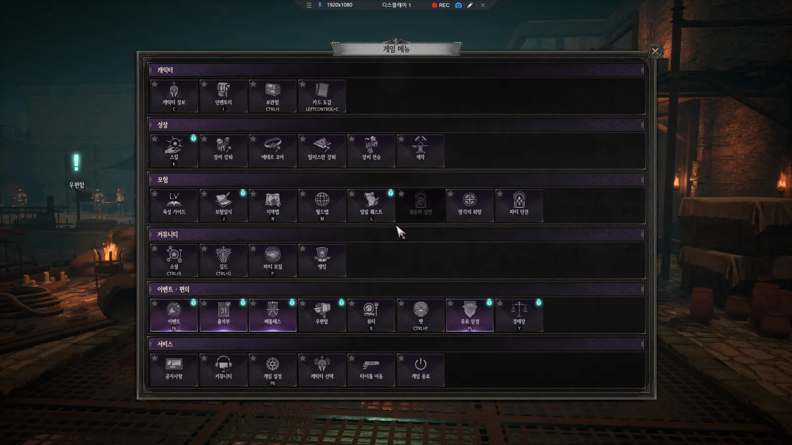
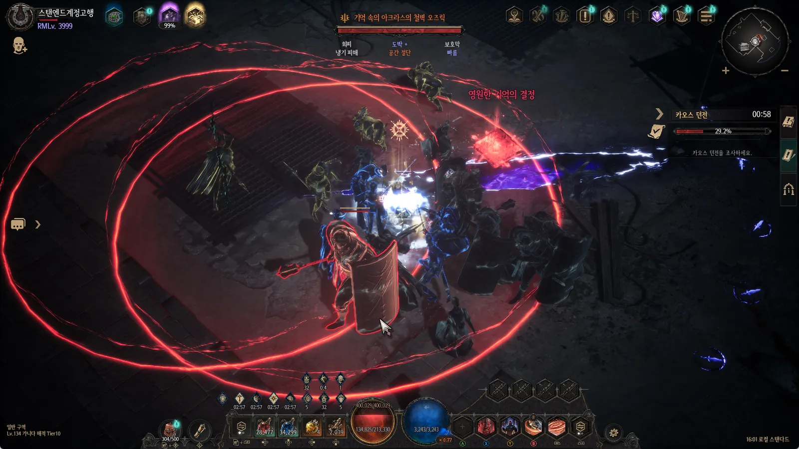
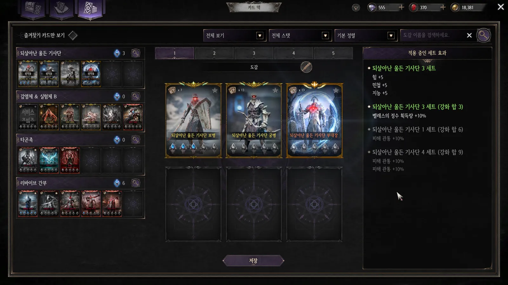
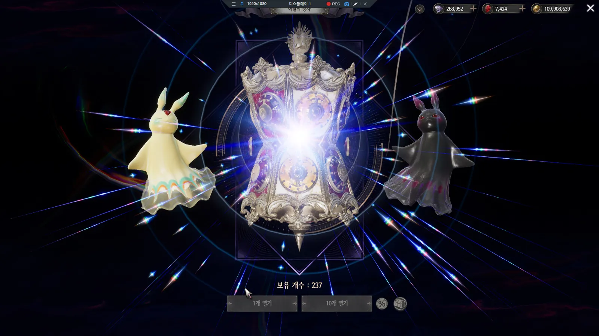
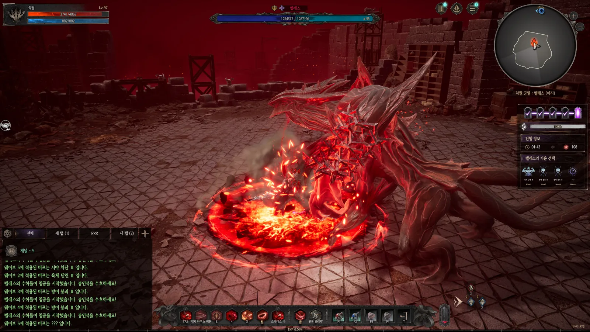
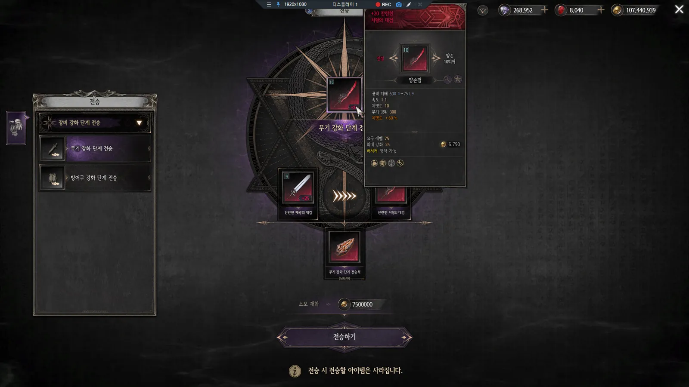
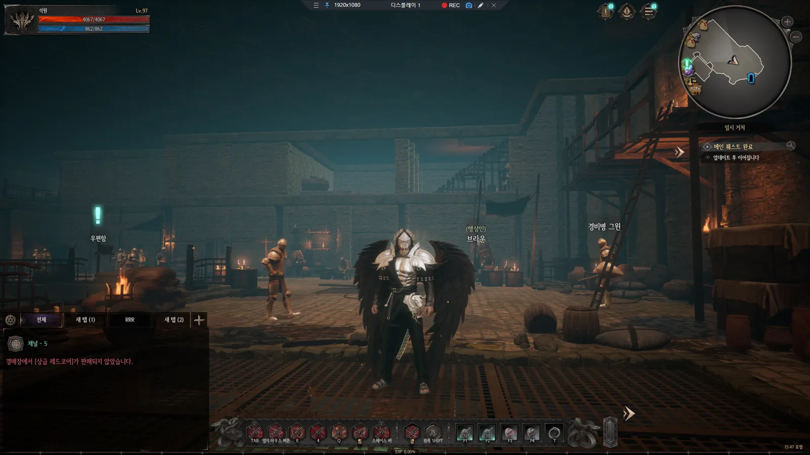
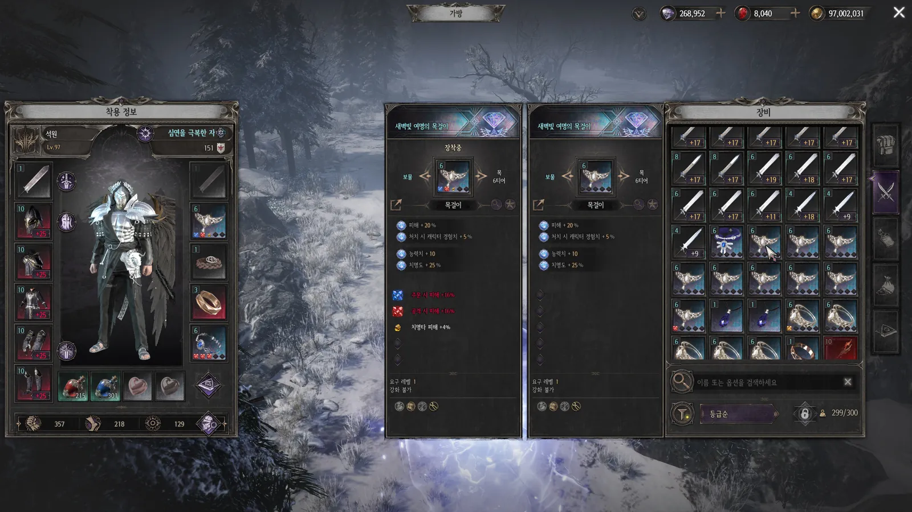
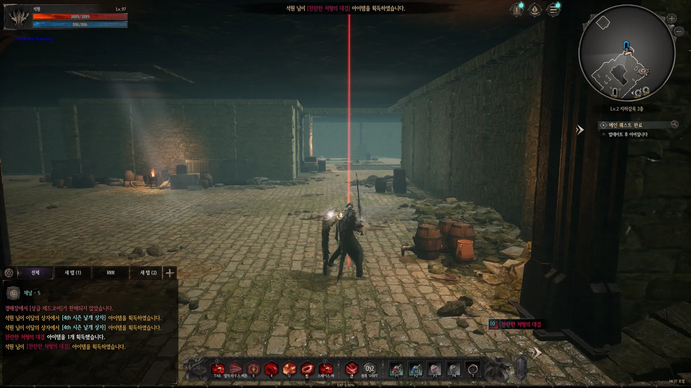

3장 · 영상DARK DECEMBER
통합 메뉴
기능을 쓰려면 NPC를 찾아가거나 여러 UI 뎁스를 거쳐야 했고, FGT에서는 시스템의 존재 자체를 모르는 유저도 있었습니다. 하나의 팝업에서 씬·기능·웹페이지를 호출하도록 하고, 카테고리 정렬·즐겨찾기 우선순위·블루닷 출력/해제 규칙을 정의했습니다.
UX 개선 · 정렬/알림 규칙
깊이는 발견하게, 시작은 가볍게.
언디셈버 · 다크디셈버에서 수집·성장 시스템, 전투 콘텐츠, 라이브 개편을 기획하고 서비스에 반영했습니다. QA 출신답게 복잡한 규칙과 예외부터 정리해, 유저가 모든 구조를 이해하지 않아도 자연스럽게 시작하고 즐길 수 있는 흐름을 설계합니다.
기능의 목적과 인과관계를 먼저 정리하고, 플레이어가 자연스럽게 이해할 수 있는 흐름으로 구체화합니다.
깊이는 발견하게,
시작은 가볍게.수집·성장 시스템은 처음에는 쉽게 시작할 수 있어야 하고, 오래 플레이할수록 파고들 깊이가 있어야 한다고 생각합니다.
유저 행동, 핵심 로직, 데이터 구조를 연결해 설계합니다. 협업 부서가 같은 기준으로 판단할 수 있도록 정책과 예외를 구체화하는 데 강점이 있습니다.
QA로 게임 개발을 시작해, 기획서에 정의되지 않은 상황이 실제 플레이에서 어떤 문제로 드러나는지 가까이에서 확인했습니다. 그래서 기획자가 된 지금도 정상 흐름보다 "보유 상태가 달라졌을 때", "조건이 일부만 충족될 때"를 먼저 묻습니다.
부분 성공, 보유 상태 변화, 미수령 보상처럼 정상 흐름 밖의 상황을 먼저 정의하고, 결과는 직접 검증한 뒤 반영합니다.
다크디셈버의 개발~글로벌 런칭에서 신규 시스템을 설계했고, 언디셈버 라이브에서는 기존 데이터를 전환하는 개편을 맡았습니다.
보조재 확률 보정과 상한, 유지·하락·파괴 결과와 방지권, 슬롯·장착 리스크까지 성장의 '도전 무게'를 숫자로 설계합니다.
화면 정보 구조와 유저 동선, 테이블 관계(ERD)를 함께 설계하고 UE4 위젯 블루프린트·레벨·스폰·몽타주 작업까지 직접 다룹니다.
QA로 게임 개발을 시작했습니다. 컴투스와 니즈게임즈에서 2년여 동안 신규 기능과 업데이트를 검수하며, 기획서에 정의되지 않은 상황이 실제 플레이에서 어떤 문제로 드러나는지 가까이에서 확인했습니다. 그래서 기획자가 된 뒤에도 정상 흐름보다 "보유 상태가 달라졌을 때", "조건이 일부만 충족될 때"를 먼저 묻습니다.
2024년 기획 직무로 전환한 뒤 다크디셈버의 개발부터 글로벌 런칭까지 장비 강화, 에테르 코어, 가챠 상자 시스템을 맡았습니다. 지금은 언디셈버에서 룬캐스트 프리셋과 시간의 성좌 통폐합 등 라이브 서비스의 시스템 설계와 콘텐츠 개편을 담당하고 있습니다.
수집·성장 시스템은 처음에는 쉽게 시작할 수 있어야 하고, 오래 플레이할수록 파고들 깊이가 있어야 한다고 생각합니다. 다크디셈버에서는 신규 시스템을 처음부터 설계했습니다. 언디셈버에서는 기존 아이템과 획득 기록, 미수령 보상까지 전환해야 하는 라이브 개편을 맡았습니다.
신규 개발과 라이브 운영을 모두 겪으며, 설계한 규칙이 유저의 플레이로 이어지고 다시 개선되는 전 과정을 책임지는 기획자가 되고 싶어졌습니다. 지금까지의 경험을 바탕으로, 더 넓은 범위의 시스템과 콘텐츠를 맡아 쉽게 시작하고 깊게 즐길 수 있는 성장 구조를 만드는 데 기여하고 싶습니다.
기획할 때는 예외부터 정리합니다. 룬캐스트 프리셋에서는 저장 당시와 현재 보유 상태가 달라도, 적용할 수 있는 구성은 적용한다는 원칙을 세웠습니다. 일부 룬이 없거나 슬롯이 잠겨 있으면 해당 슬롯만 건너뛰고 결과를 부분 성공으로 안내했습니다. 교체 과정에서 생기는 인벤토리 초과는 예외로 허용했습니다. 또 캐릭터별 장착 구성과 계정 단위 슬롯 해금을 분리해, 시즌이 바뀌어도 구매한 슬롯이 유지되도록 했습니다.
유저 동선의 불편도 구조에서 원인을 찾습니다. 다크디셈버에서 원기획한 카드 앨범·덱을 언디셈버로 이관하면서, 앨범이나 덱에서 본 카드를 강화하려면 카드 목록에서 다시 찾아야 하는 불편을 발견하고 직접 개선했습니다. 롱프레스로 해당 카드를 바로 강화 대상으로 연결해, 카드를 확인하는 단계와 성장시키는 단계 사이를 줄였습니다.
협업할 때는 다른 직무의 작업 방식을 이해하려고 노력합니다. 기획한 기능이 클라이언트와 서버 중 어디에서 처리되는지, 어떤 조건에서 구현이 어려워지는지 관심을 갖고 프로그래머에게 묻고 확인합니다. 문제가 생기면 현상만 전달하는 데서 그치지 않고, 어느 단계에서 원인이 생기는지 디버깅 과정을 따라가며 익히고 있습니다. 이렇게 쌓은 이해를 바탕으로 기획 단계부터 구현 가능성과 처리 위치를 고려하고, 구현 조건과 기획 의도를 같은 기준으로 놓고 의견을 조율합니다.
입사 후에는 먼저 담당할 게임의 시스템 구조와 데이터, 유저 동선을 파악해 맡은 영역의 설계 의도를 정확히 이해하겠습니다. 신규 시스템을 설계할 때는 기존 구조와의 연결과 예외 상황까지 정의하겠습니다. 라이브에서는 유저 반응과 지표를 근거로 개선 과제를 찾아 제안하겠습니다.
지금도 시스템 구조를 정리하거나 기획서를 작성할 때 AI 도구를 활용하고 있습니다. 앞으로도 새로운 도구를 꾸준히 익혀 작업 효율을 높이되, QA 경험을 살려 결과를 직접 검증한 뒤 반영하겠습니다. 장기적으로는 시스템 하나를 넘어 성장 구조 전체를 설계하는 기획자가 되겠습니다.
검수하며 쌓은 '예외를 보는 눈'을, 설계 단계로 옮겨 왔습니다.
카드를 누르면 기획 배경부터 규칙·예외·데이터 구조·UI까지 자세한 내용과 실제 플레이 영상, 직접 조작해볼 수 있는 규칙 데모를 볼 수 있습니다.
라이브 서비스 · 기존 데이터와 유저 기록을 지키며 바꾸는 개편
 시스템 메인
시스템 메인여러 장착 영역의 구성을 저장하고, 현재 보유 상태에 맞춰 복원하는 빌드 전환 시스템. 누락된 룬·잠긴 슬롯은 건너뛰고 '부분 성공'으로 안내합니다.

콘텐츠 메인시즌마다 따로 반복하던 성장 파밍을 카오스 던전 동선으로 통합. 기존 아이템·획득 기록·미수령 보상의 전환 정책까지 수립했습니다.

DD 원기획 → UD 이관모은 카드는 앨범의 성장으로, 장착한 카드는 덱의 효과로 이어지는 수집·강화 시스템. 이관 후 롱프레스로 '확인 → 강화' 동선을 줄였습니다.
 콘텐츠 메인 · 시스템 서브
콘텐츠 메인 · 시스템 서브제한 시간 동안 웨이브를 처치하며 축복·저주를 선택해 전투 조건을 바꾸고, 보상 스테이지에서 보물상자를 여는 연속 전투 콘텐츠.
신규 개발 ~ 글로벌 런칭 · 처음부터 설계한 성장·BM·콘텐츠
 시스템 메인
시스템 메인단계 성장에 재료 선택과 위험 보호를 더한 장비 성장 시스템. 보조재 확률 보정·상한, 유지/하락/파괴 결과와 방지권 정책, 결과 연출과 무기 이펙트까지.
 시스템 메인
시스템 메인장비 획득 시 슬롯 수가 정해지고, 코어 장착으로 효과를 누적하는 2단계 성장 구조. 뒤 슬롯일수록 기존 코어를 잃을 위험을 더해 도전의 무게를 조절했습니다.

시스템 메인결과 확인만 하던 상자를 BM 전용 상자로. 소단위 개봉과 짧은 획득 연출로 기대감이 쌓이는 구조를 설계하고, 인벤토리 체크 로직까지 개선했습니다.

시스템·콘텐츠 메인 · 보스 서브1~4인이 봉인석을 방어한 뒤 마지막 웨이브에서 보스 벨레스를 처치하는 콘텐츠. 웨이브 사이 '기운' 선택으로 전투 부담과 보상을 함께 고르게 했습니다.
메인 프로젝트 외에 직접 작성한 기획서로 반영된 시스템들입니다. 이미지를 누르면 크게 볼 수 있습니다.

3장 · 영상기능을 쓰려면 NPC를 찾아가거나 여러 UI 뎁스를 거쳐야 했고, FGT에서는 시스템의 존재 자체를 모르는 유저도 있었습니다. 하나의 팝업에서 씬·기능·웹페이지를 호출하도록 하고, 카테고리 정렬·즐겨찾기 우선순위·블루닷 출력/해제 규칙을 정의했습니다.

5장 · 영상상위 장비를 얻어도 기존 장비의 성장 수치가 아까워 교체를 망설이는 현상을 완화하기 위해, 성장 경험치 일부를 전승하도록 설계했습니다. 옵션은 전승하지 않아 인챈트로 장비를 완성해 가는 순환은 유지했습니다.

4장 · 영상하락이 두려워 특정 단계에 '주차'하거나 일부 부위만 키우던 성장 패턴을 풀기 위해, 여러 장비를 같은 단계 이상 성장시키면 스탯과 외형 효과가 발현되도록 했습니다. 가장 높은 세트 효과 1종만 적용합니다.

4장캐시·이벤트 장비의 특별한 획득 경로와 가치를 표현하는 상징 등급을 추가했습니다. 컬럼 추가가 아니라 ItemGrade Enum을 확장해 기존 시스템과 자연스럽게 연동되고, 이후 등급별 기능 분리에도 대응할 수 있게 했습니다.

5장장비 강화 성공·파괴, 이달의 아이템 획득을 서버 전체에 알리는 확성기 조건을 정의했습니다. 결과 연출이 끝나기 전에 알림이 먼저 노출되지 않도록 출력 순서를 처리했습니다.
 원본 기획서
원본 기획서포트폴리오에 정리한 시스템들의 원본 기획서를 Google Drive에 모아두었습니다. 내부 데이터가 포함된 표와 일부 내용은 블러 처리되어 있습니다.
경력과 프로젝트에 대해 궁금한 점이 있으시면 편하게 연락 주세요.